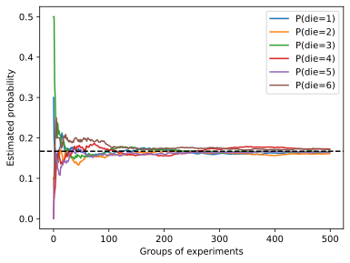

概率
绘制概率图

%matplotlib inline
import torch
from torch.distributions import multinomial
from d2l import torch as d2l
counts = multinomial.Multinomial(10, fair_probs).sample((500,))
cum_counts = counts.cumsum(dim=0)
estimates = cum_counts / cum_counts.sum(dim=1, keepdims=True)
d2l.set_figsize((6, 4.5))
for i in range(6):
d2l.plt.plot(estimates[:, i].numpy(),
label=("P(die=" + str(i + 1) + ")"))
d2l.plt.axhline(y=0.167, color='black', linestyle='dashed')
d2l.plt.gca().set_xlabel('Groups of experiments')
d2l.plt.gca().set_ylabel('Estimated probability')
d2l.plt.legend();
概率论公理
条件概率，联合概率的概率不再给出；
贝叶斯定理
使用条件概率的定义，我们可以得出统计学中最有用的方程之一： Bayes定理（Bayes’ theorem）。 根据乘法法则（multiplication rule ）可得到$P(A, B) = P(B \mid A) P(A)$。 根据对称性，可得到$P(A, B) = P(A \mid B) P(B)$。 假设$P(B)>0$，求解其中一个条件变量，我们得到
$$P(A \mid B) = \frac{P(B \mid A) P(A)}{P(B)}.$$
请注意，这里我们使用紧凑的表示法： 其中$P(A, B)$是一个联合分布（joint distribution）， $P(A \mid B)$是一个条件分布（conditional distribution）。 这种分布可以在给定值$A = a, B=b$上进行求值。
边际化
为了能进行事件概率求和，我们需要求和法则（sum rule）， 即$B$的概率相当于计算$A$的所有可能选择，并将所有选择的联合概率聚合在一起：
$$P(B) = \sum_{A} P(A, B),$$
这也称为边际化（marginalization）。 边际化结果的概率或分布称为边际概率（marginal probability） 或边际分布（marginal distribution）。
独立性
另一个有用属性是依赖（dependence）与独立（independence）。 如果两个随机变量$A$和$B$是独立的，意味着事件$A$的发生跟$B$事件的发生无关。 在这种情况下，统计学家通常将这一点表述为$A \perp B$。 根据贝叶斯定理，马上就能同样得到$P(A \mid B) = P(A)$。 在所有其他情况下，我们称$A$和$B$依赖。 比如，两次连续抛出一个骰子的事件是相互独立的。 相比之下，灯开关的位置和房间的亮度并不是（因为可能存在灯泡坏掉、电源故障，或者开关故障）。
由于$P(A \mid B) = \frac{P(A, B)}{P(B)} = P(A)$等价于$P(A, B) = P(A)P(B)$， 因此两个随机变量是独立的，当且仅当两个随机变量的联合分布是其各自分布的乘积。 同样地，给定另一个随机变量$C$时，两个随机变量$A$和$B$是条件独立的（conditionally independent）， 当且仅当$P(A, B \mid C) = P(A \mid C)P(B \mid C)$。 这个情况表示为$A \perp B \mid C$。
期望和方差
为了概括概率分布的关键特征，我们需要一些测量方法。 一个随机变量$X$的期望（expectation，或平均值（average））表示为
$$E[X] = \sum_{x} x P(X = x).$$
当函数$f(x)$的输入是从分布$P$中抽取的随机变量时，$f(x)$的期望值为
$$E_{x \sim P}[f(x)] = \sum_x f(x) P(x).$$
在许多情况下，我们希望衡量随机变量$X$与其期望值的偏置。这可以通过方差来量化
$$\mathrm{Var}[X] = E\left[(X - E[X])^2\right] = E[X^2] - E[X]^2.$$
方差的平方根被称为标准差（standard deviation）。 随机变量函数的方差衡量的是：当从该随机变量分布中采样不同值$x$时， 函数值偏离该函数的期望的程度：
$$\mathrm{Var}[f(x)] = E\left[\left(f(x) - E[f(x)]\right)^2\right].$$
应用
在原文中，有一个医生对患者进行HIV测试的概率分析；题目较长，这里不给出；